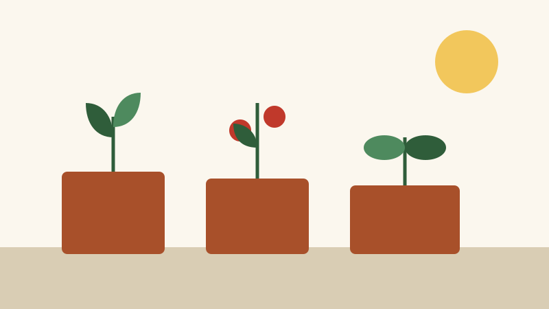

Grow vegetables in pots, even in a small space

You do not need a yard to grow food. A balcony, patio, or sunny windowsill is enough for many vegetables. This guide shows you how to choose the right pot, the right plant, and the right care for each season.
Get started in four steps
-
1. Check your sun
Most vegetables need at least six hours of direct sun. Leafy greens can manage with three to six hours.
-
2. Choose the pot
Pick a container with drainage holes. Leafy greens need about 1 gallon, and tomatoes need 5 gallons or more.
-
3. Use good potting mix
Use a light potting mix made for containers. Garden soil packs down and drains poorly in pots.
-
4. Water deeply
Water until it runs out of the drainage holes. Check the top inch of soil before you water again.
Where to go next
-
Plant Guide
Filter twelve vegetables by sun level and planting season, and compare pot size and days to harvest.
Browse plants -
Seasonal Planner
Work through a month-by-month checklist. Your progress is saved in this browser.
Open planner -
Workshop Sign-up
Join a free beginner workshop to practice planting a pot with a small group.
Sign up